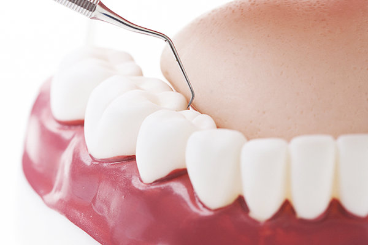

스케일링 후 주의사항
치아 스케일링 후 느끼는 차이는 ‘잇몸염’ 존재 여부에 따라 달라집니다. 스케일링 직후에는 치아 및 잇몸이 자극을 받은 상태로 잇몸이 안정되기까지 걸리는 시간은 약 2주 입니다. 이 기간 동안에는 스케일링 후 주의사항을 지키는 것이 좋습니다.
-
침 삼키기
1~2일 정도 출혈이 있을 수 있어 입에 고인 피나 침은 뱉지 말고 삼키기
-
칫솔질
칫솔질 중 출혈이 나더라도 꼼꼼하게 하기
-
음식 주의
차갑고, 뜨거운 것, 자극적인 음식 피하기
-
금주, 금연
최소 1주일 이상 금주, 금연
-
일시적인 치아 시림
일시적으로 몇 일 동안 치아 시림 현상
-
회복 과정 중 불편함 느낌
치아가 흔들리거나, 잇몸이 부어있는 듯한 느낌
-
진료 약속 날짜 지키기
치석이 많아 재 약속을 한 경우 약속 날짜에 방문해 치료 마무리 짓기
-
정기 구강 검사
6개월~1년에 한 번씩 정기적인 구강 검사와, 필요 시 스케일링 받기